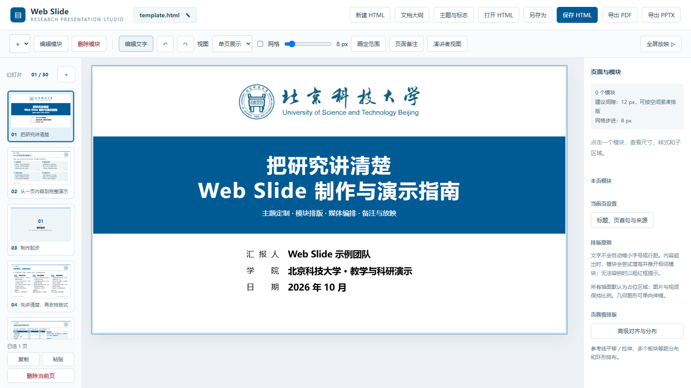
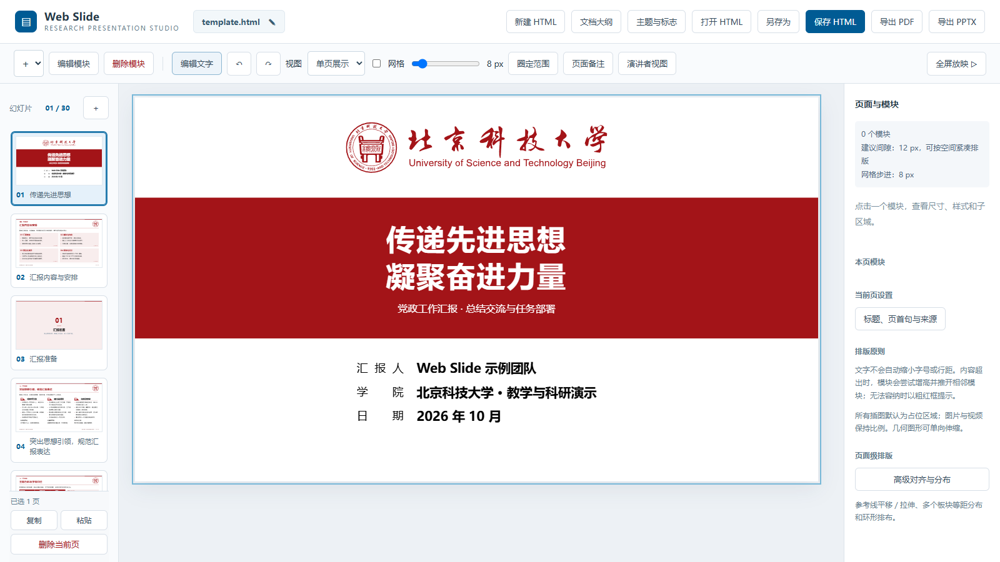
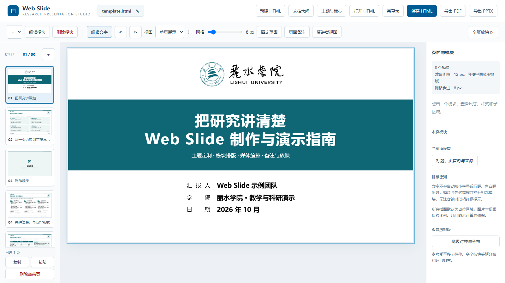

主模板
直接打开任一 HTML 即可离线编辑和放映；运行“启动.cmd”后可使用本地导出服务。模板之间共享工作台能力，但主题、校徽和示例内容相互独立。

北京科技大学 · 科技蓝
科研、组会、答辩与学术交流的主模板。

北京科技大学 · 钢铁红
党政汇报与正式会议场景，沿用同一模块系统。

丽水学院 · 主题青
展示模板增量迁移、主题替换和学校资源适配能力。
工作台功能入口
启动、编辑、放映与导出功能与操作说明
图文控件与典型工作流AI 协作规范
大纲、排版与人工审核边界模板扩展接口
增量添加新学校和新主题
测试与参考页面
以下页面用于浏览单项能力，不是主模板。它们适合检查样式、导航和模块行为。
常用页面与模块组合文本块样式
A／B／C 系列排版导航与时间轴
多页浏览、放映和时间轴简化样式展板
快速查阅文本块外观